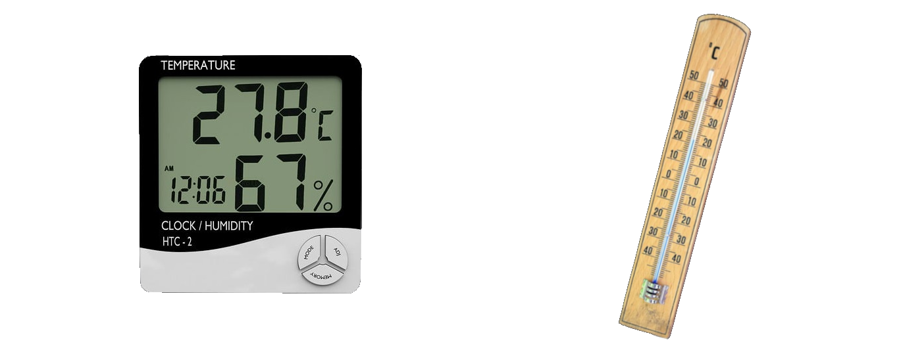
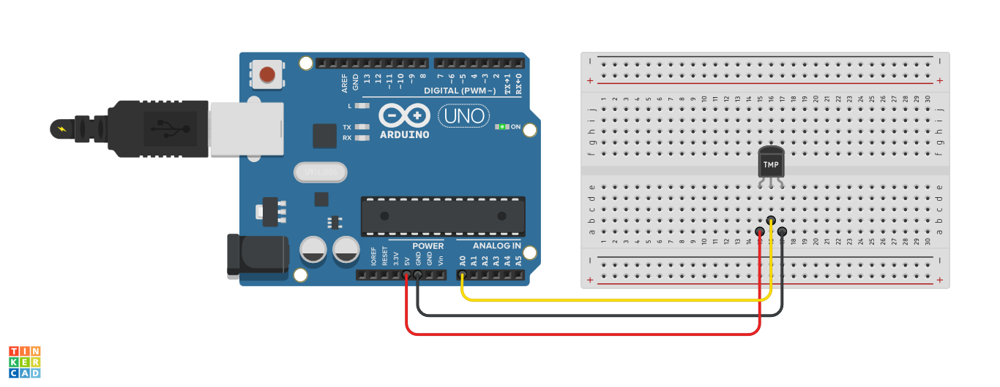

Conteúdo 4 - Sensores: Sensor de Temperatura TMP36
Sobre a aula:
- Compreender que os sensores são componentes responsáveis pela percepção e interação dos robôs com o mundo;
- Entender a funcionalidade do sensor de temperatura TMP36 e como ele pode ser incorporado num circuito eletrônico com a placa Arduino;
- Criar um circuito para medir a temperatura do ambiente e graus celsius (°C).
Materiais para aula:
- 1 x Arduino Uno;
- 1 x Protoboard 400 pontos;
- 1 x Cabo USB para comunicação;
- 1 x Sensor de Temperatura TMP36;
- 2 X Resistores de 150(Ω) Ohm;
- 2 x Led de 5mm 1.9 ~ 2.2(V) Volts e 20(mA) Miliampère;
- 7 x Jumpers.
Título da aula
Sensores de temperatura
Orientações: Ler o tema da aula e comentar com os alunos sobre como os sensores de temperatura são capazes de medir a temperatura ambiente e, quando conectados ao Arduino, fornecem informações para uma variedade de aplicações. Desde o monitoramento da temperatura em ambientes controlados até o desenvolvimento de dispositivos de alerta de condições adversas, como aquecimento excessivo.
Contexto
Orientações: Construa um cenário que incentive a conversa em sala de aula para que os alunos possam reconhecer a análise da imagem. Essa conversa inicial é para debater o significado das palavras sensor e temperatura, que deve ser baseada em imagens e explicações sobre o assunto.

Imagem sensores de temperatura
1. Quais são os principais tipos de sensores usados para medir temperatura em sistemas eletrônicos?
2. Quais são as escalas de medida de temperatura mais comuns?
Questão Disparadora
Após o levantamento prévio do conhecimento dos alunos, apresenta-se a questão disparadora.
Dentro do universo do Arduino para que servem os sensores de temperatura?
Orientações:
Ouça as respostas dos alunos, não é preciso fazer anotações,
pois essas discussões serão organizadas ao término desta proposta de aula.
Atividade Investigativa
Orientações:
Comece explicando aos alunos o que é um sensor de tempertura TMP36
e como ele funciona. Destaque que um sensor TMP36 tem a finalidade
de medir a temperatura do ambiente utilizando o Arduino, e é composto de
3 terminais conforme a figura, sua alimentação funciona na faixa de
2.7V a 5.5V, não necessita de ajustes externos para seu funcionamento,
ele também fornece uma saída de tensão diretamente proporcional a temperatura
em graus celsius, com precisão de ±1°C na faixa 1°C a 25°C e ±2°C para a faixa de -40°C a 125°C.
Peça para os alunos acessarem o link do projeto a seguir:
Atividade medir temperatura com sensor TMP36 e visualizar no monitor serial
- De acordo com projeto elaborado no Tinkercad qual é o menor valor de tempertura em medido em °C (graus celsius) pelo sensor TMP36?
- De acordo com projeto elaborado no Tinkercad qual é o maior valor de tempertura em medido em °C (graus celsius) pelo sensor TMP36?
Tutorial Usando sensor de temperatura com Arduino
Aprenda sobre escalas de medida de temperatura
Sistematização
Descreva os conceitos de eletrônica utilizados para construção de um circuito com sensor TMP36 e Arduino:

Circuito com sensor TMP36
- Qual é o princípio de funcionamento do sensor TMP36?
- Como o sensor TMP36 detecta a temperatura do ambiente?
- Dê exemplos de projetos que poderiam se beneficiar do uso deste sensor:
Atividade Prática
Utilizar a plataforma de simulação online Thinkercad.
Para montar o circuito na protoboard observe os seguintes pontos:
- O sensor TMP36, tem 3 terminais VCC, sinal e GND.
- Primeiramente o pino digital 9 e 6 estão designados para acionar os LEDs verde e vermelho, pino analógico 0 para receber as informações do sensor e o pino 5v para alimentar o sensor de temperatura. Ao ligar a placa o pino de 5v alimenta até a saída da tensão pelo pino GND, enquanto isso o sensor irá realizar a leitura da temperatura e enviará as informações através do pino A0, acionando a tensão de 5v para os LEDs conectados ao pino D9 e D6, onde irá fluir até o pino GND.

Circuito base para a atividade
Acessar o link da atividade a seguir:
Atividade ligar LEDs com sensor de temperatura TMP36
Materiais de apoio:
Sensores de temperatura:
LM35 | TMP36 | DS18B20 (Completo);
Como
utilizar um sensor de temperatura com Arduino?
Leitura de temperatura ambiente com o sensor LM35.